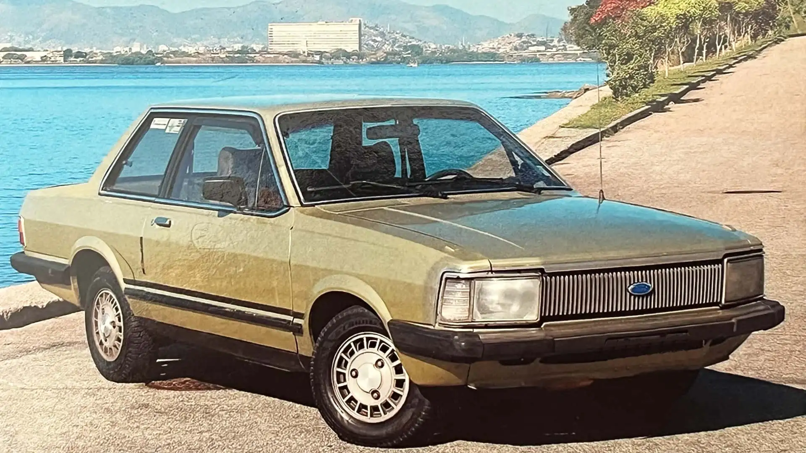

OLDSCHOOL
Ficha Técnica
Ano
1981 - 1991
Motor
1.8 | 4 cilindros
Potência
95 cv
Câmbio
Manual | 5 marchas
Tração
Dianteira
Carroceria
Sedã
Combustível
Gasolina
FIPE
R$ 15.000 ~ R$ 45.000
O luxo nacional dos anos 80
O Ford Del Rey foi um dos modelos mais sofisticados da Ford no Brasil durante os anos 80. Com acabamento refinado, interior confortável e equipamentos que eram considerados luxuosos para a época, conquistou espaço entre os sedãs nacionais. Seu visual elegante e sua importância na história da indústria brasileira fizeram dele um clássico lembrado até hoje.